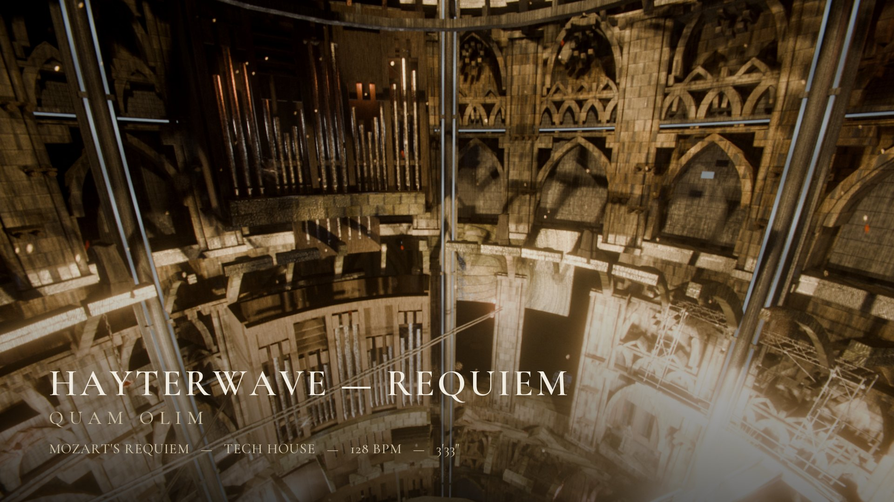

A film by HAYTERWAVE
HAYTERWAVE—REQUIEM
Quam Olim
Mozart's Requiem — the Lacrimosa and Quam olim Abrahae — reimagined as tech house at 128 BPM. A gothic cathedral, built around the music. 3 min 33 s.
Screening 15 · 09 · 2026
Tech House Market pro-feedback stream
with CASHEW
The Film
Photosensitivity notice — this film contains flashing lights, lightning and rapid high-contrast motion.
Rendering1080p picture, lossless audio to follow.
1920 × 1080 · 24 fps · stereo · 128 BPM · 3′33″
Made With
- Music
- Wolfgang Amadeus Mozart — Requiem in D minor, K. 626: Lacrimosa, Quam olim Abrahae. Arranged and produced by HAYTERWAVE.
- Choir
- EastWest Hollywood Choirs Diamond — performed in MIDI, phrased with WordBuilder.
- Piano
- Kontakt 7 grand, heavily processed.
- Drums & Bass
- Drums, bass and presets from Tech House Market packs — Modern Tech House Vol. 2 leads; Cashew's “Nice Sine” is the sub bass. Some drums tuned with Ableton Corpus.
- Picture
- A 3D gothic cathedral, built around the music. Directed and edited by HAYTERWAVE.
- Sound
- Processed, mixed and mastered by HAYTERWAVE.
Feedback
Notes on the music and the picture are both welcome — nothing is locked. Timecodes help.